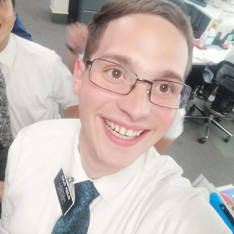

Fermín Olaiz | WDD130
I'm a CS student barely starting his journey! I love software development and have been doing so for quite a few years. I started out young :) Despite that, I always find new things to learn and interesting topics to read about.
I currently work on a web hosting company based a few hours from the city I live in. Luckily, I've always been able to work remote so that's not an issue!
One of my big hobbies is electronics, and I'd really like to find a job related to that! I'm currently working with a friend on restoring an old Guitar Hero guitar, we're completely making the controller from scratch, making it wireless, and making it work with a PC instead of a PS2. It's been quite a journey but, boy, do I love working on this kind of things.